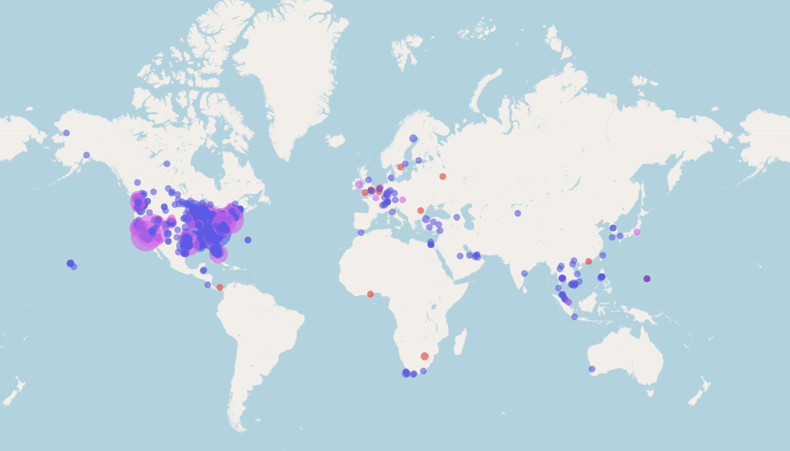

Psych Review Hub is a free, interactive way to study AP Psychology, built by a teacher who wanted his students to have something better to do on the bus than doom scroll.
41Countries
~1,200Cities
Reached in the first three months, starting from a single classroom
Welcome
Welcome! If you are here, you are likely navigating the fascinating (and sometimes overwhelming) world of AP Psychology. You are in the right place.
My mission is simple: to make studying for psychology engaging, interactive, and highly effective.
The Story Behind the Site
While traditional study methods like textbooks and class notes are essential foundations, I wanted to create a fun, interactive way for students to practice and reinforce what they've learned. My goal was to build a readily accessible tool that could transform "down" moments, like riding the bus or waiting in line, into something useful and engaging, offering a productive alternative to doom scrolling.
To make this practice as effective as possible, the site actively relies on the proven cognitive science principles you study in class. In fact, many of the mechanics behind these games are the exact concepts you will learn about in Unit 2 (Cognition), such as retrieval practice, encoding strategies, and spaced repetition. By connecting your classroom curriculum directly to the way these games function, you get to experience psychology in action while you study.
The journey to get here actually started with a crash, literally. My first attempt at building an interactive study tool was on Canva, but the sheer volume of AP Psychology terms, questions, and topics kept bringing the system down. I went back to the drawing board and custom-built this version from the ground up.
Initially, it was just a tool for my own students. But once I saw the final product, I shared it with a community of fellow psychology teachers, and it took off. What started in one classroom quickly went global: in the first three months alone, the site welcomed students from almost every US state and nearly 1,200 different cities across 41 countries! During the week of the AP exam, the site averaged over 2,000 visits a day, spiking to an incredible 8,000 visits in the final 24 hours before the test.

What started as a local review tool has now helped psychology students from all across the globe! This map shows where visitors came from during the first three months of the site. To respect user privacy, I no longer track visitor location.
Now, Psych Review Hub has been completely rebuilt and expanded to be even more powerful, designed to be your go-to resource all year long, not just during the final exam cram.
What You'll Find Here
Everything is free, and every tool draws on the same bank of AP Psychology terms.
Hi, I'm Ben from Appleton! I've been teaching for 14 years, and I've taught AP Psychology since the 2024–25 school year.
I teach in the Appleton Area School District. My background is in social studies education rather than a psychology degree: I graduated from St. Norbert College in De Pere, Wisconsin, and psychology is one of the areas of focus in my social studies teaching license.
That said, I've always had a soft spot for psychology. When I taught a class called Law and Order, one of my favorite lessons was on eyewitness testimony. We would watch a video from the Innocence Project about the research of Dr. Elizabeth Loftus and her work on memory reconstruction and malleability. Her research on how false information can reshape what we remember is closely tied to the misinformation effect, which students now study in Unit 2 (Cognition). You can read more in the study guide for Topic 2.7: Forgetting & Other Memory Challenges, and the video is below if you're curious.
Human Factors in Wrongful Convictions: Memory Malleability. Dr. Elizabeth Loftus explains how memories are constructed and how false information can alter them. Source: Innocence Project.
I've always been a little bit of a technology geek and learned some basic web development back in college. When that original Canva website crashed, it immediately became a challenge that I needed to solve. That challenge quickly transformed into a full-blown passion project: I have quite literally spent dozens (if not well over 100!) of hours coding, designing, and testing to make this platform the best it can possibly be. To give you a little peek under the hood, all of those late nights have added up to over 1.1 million characters spread out across more than 25,000 lines of custom code (and growing!). Not only has this journey helped me dive back into web development, but it has profoundly deepened my own understanding of psychology in general. I hope it does the same for you!
People often ask me why I became a teacher. It isn't strictly about the content (I thought about teaching English and Math over the years, too). It is entirely about the people in the seats every day. When I was assigned AP Psychology, it became a personal mission to help as many students as possible be as successful as possible on the AP test in May. Everything you see here, from the interactive board games to the curated confusing pairs, was designed with student success in mind. I hope you find it useful and wish you all success this year and beyond!
Get in Touch
This site is constantly evolving. If you spot an error, have a brilliant idea for a new game, or just want to say that the site helped you pass your exam, I would love to hear from you!